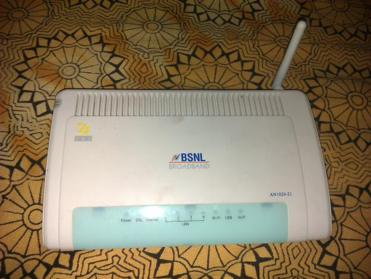

Hey friends, yesterday we learnt about Hacking websites using SQLMAP and Advanced Persistant threat. Today we are going to learn how to break into BSNL ADSL routers. Hacking BSNL broadband routers is quite interesting, so Hackingloops has came up with tutorial on Hacking BSNL broadband routers Tutorial on how to hack BSNL broadband routers.
Note : This hack works on most of newly ADSL, ADSL2+, ADSL2+M routers.
In this article we are going to hack into router to learn more about it. You might not know that this small and innocent looking modem is actually a “Linux CPU”. Lets get into it. First do a nmap scan of this modem. Here is a quick example :